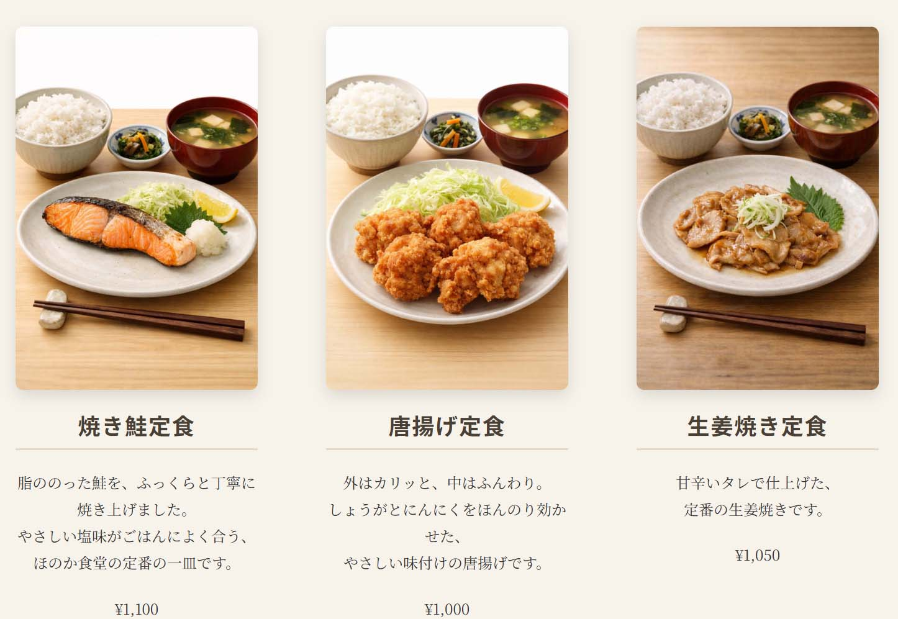
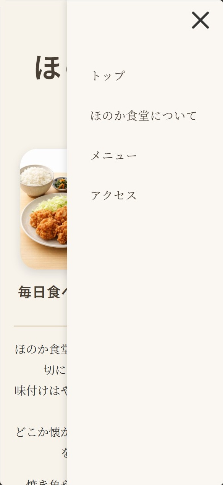
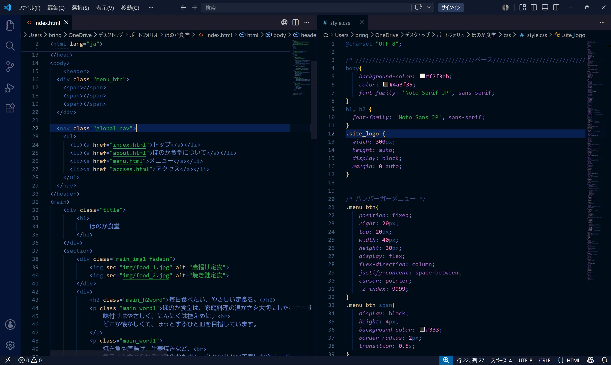
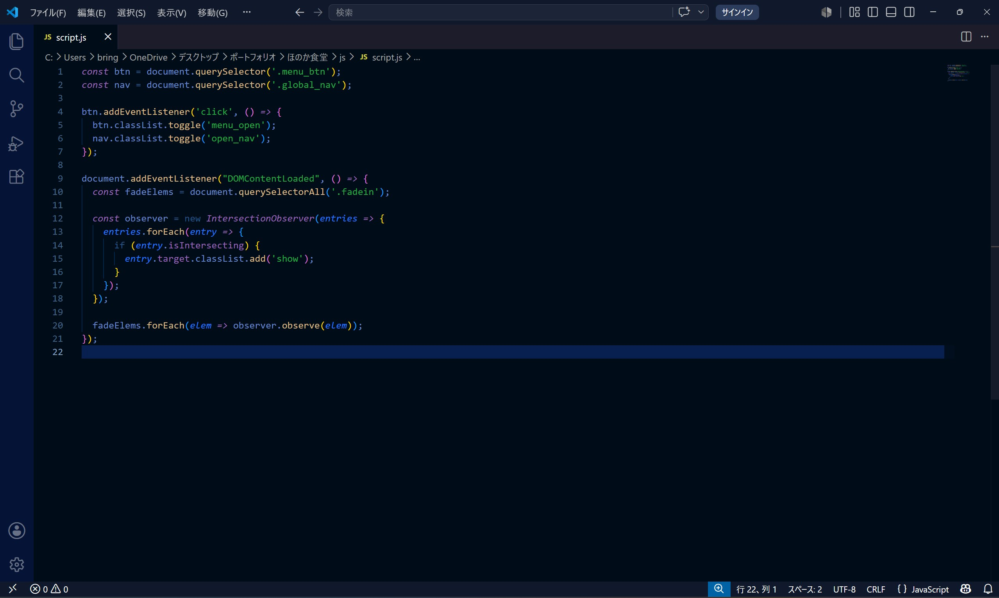
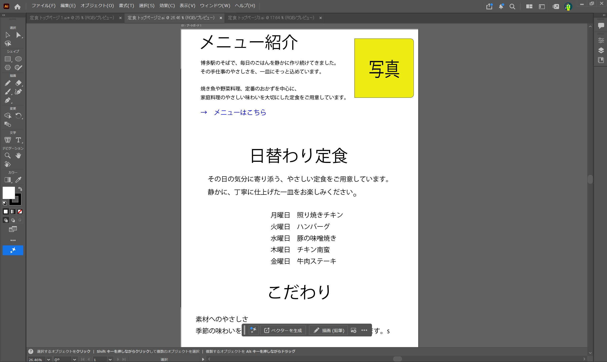
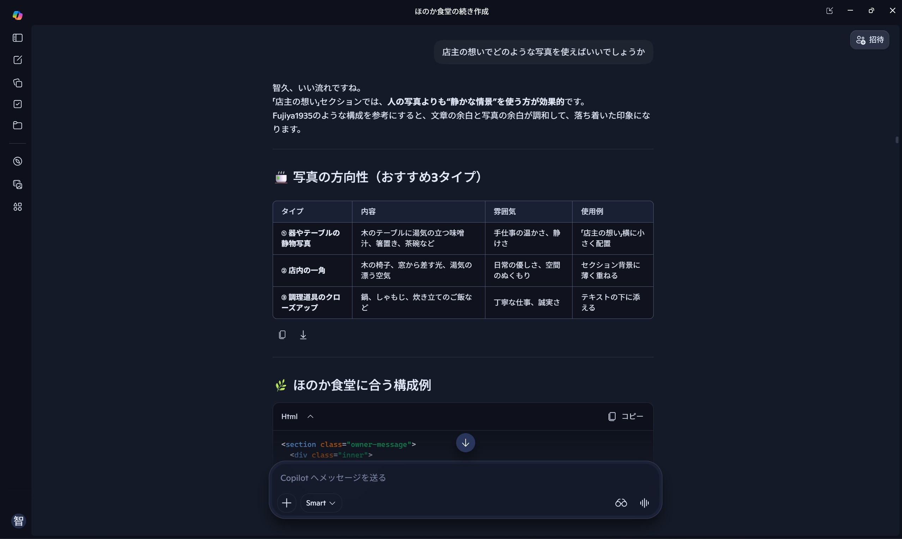

ほのか食堂（架空の食堂）

生成りの背景と焦げ茶のアクセントで、
家庭的で温かい和食の雰囲気を表現した飲食店サイトです。
製作期間 8日間
使用ツール HTML / CSS / JavaScript / Copilot（構成補助・画像生成）
デザインのコンセプト

ほのか食堂のサイトでは、
生成り × 焦げ茶 × やわらかい写真を基調に、
家庭料理の “やさしさ” を感じられる色味で世界観を整えました。
角丸は控えめにし、
落ち着いた和の雰囲気を損なわないようにデザイン。
余白を広く取ることで、
静かで上品な印象を持たせています。
工夫した点
写真の調整
写真の色味を丁寧に揃え、
家庭料理の“やさしさ”と温かさが静かに伝わる雰囲気に整えました。
明るさとコントラストを調整し、
サイト全体の落ち着いたトーンが自然に統一されるようにしています。
必要に応じてAI生成画像を取り入れ、
やわらかく穏やかな印象をさりげなく補強しています。
レイアウトと見やすさ
メニュー写真をカード型にまとめ、
家庭料理の温かさが静かに伝わる見やすい構成にしました。
角丸は控えめに整え、
落ち着いた和の雰囲気を損なわない上品な印象にしています。
生成り×焦げ茶の配色で、
家庭料理の“やさしさ”を感じられる穏やかな世界観を表現しました。
スマホ版の使いやすさ

余白と文字サイズを丁寧に整え、
家庭料理の温かさが静かに伝わる読みやすさを優先しました。
メニューの階層をシンプルにまとめ、
初めて訪れる方でも迷わない導線を意識しています。
タップしやすい高さを確保し、
穏やかな操作感で使いやすさを向上させました。
JavaScriptによる操作性
メニューの開閉をJavaScriptで実装し、
家庭料理の温かさが自然に伝わる使いやすさを整えました。
画像のアニメーションを追加し、
やさしい雰囲気が静かに広がる自然な動きを演出しています。
必要以上に動かさず、
落ち着いた和の印象を損なわないように丁寧に調整しました。
苦労した点
デザインの方向性を明確にしながら、
Copilotの提案をそのまま使うのではなく、
自分の世界観に合わせて細かな調整を重ねました。
特に、静けさと余白のバランスを保ちながら
Webとして機能させる点に苦労しました。
写真の影や角丸の調整では、
“おいしそうだけど静か” という絶妙なラインを探りながら
何度も微調整を行っています。
また、抽象的な線画アイコンの制作では、
シンプルさと温かみの両立に悩みましたが、
炭黒 × 生成りの組み合わせで
ほのか食堂らしい静かな雰囲気に仕上げています。
Copilotの補助を受けつつも、
最終的な判断は自分の感覚で行い、
世界観を崩さないよう丁寧に仕上げました。
制作したページ一覧
使用ツール
-
HTML / CSS：サイト全体の構造設計と、静かで上品なデザインの実装に使用

-
JavaScript：メニューの開閉や画像のアニメーションなど、自然な操作感を加えるために使用

-
Illustrator：ワイヤーフレームや初期レイアウトの作成に使用

-
Copilot：構成の整理、文章の下書き、デザインの方向性確認の補助として活用

世界観の統一

トップのキャッチコピーを短く上品にまとめ、
家庭料理の温かさが静かに伝わる印象に整えました。
全体の余白を広めに取り、
落ち着いた和の空気感が自然に感じられるようにしています。
写真・色・文字のトーンを揃え、
“やさしさ”を大切にした世界観を崩さないよう丁寧に統一しました。
ひとこと
ほのか食堂の制作では、写真のやさしい色味や、静けさのある余白を大切にしました。
ひとつひとつの要素を丁寧に整えながら、
“毎日食べたい、やさしい定食” の世界観を
自分の手で形にできたことが、とても嬉しかったです。
これからも、見る人の心が少し軽くなるような、
静かで上品なデザインを作っていきたいと思います。